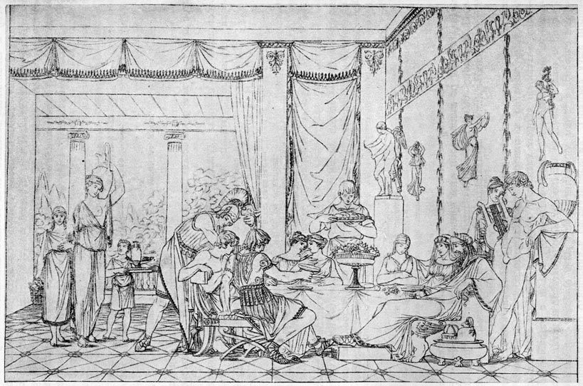

Душинька
В 1775 году Богданович положил на олтарь граций свою «Душеньку». Он жил тогда на Васильевском острову, в тихом, уединенном домишке, занимаясь музыкою и стихами, в счастливой беспечности и свободе; имел приятные знакомства; любил иногда выезжать, но еще более возвращаться домой, где муза ожидала его с новыми идеями и стихами... Мирные, неизъяснимые удовольствия творческого дарования, может быть, самые вернейшие в жизни! Нередко призраки суетности и других страстей отвлекают нас от сих любезных упражнений; но какой человек с талантом, вкусив их сладость и после вверженный в шумную, деятельную праздность света, среди всех блестящих забав его не жалел о пленительных минутах вдохновения? Сильный, хороший стих, счастливое слово, искусный переход от одной мысли к другой радуют поэта, как младенца...

Басня Психеи есть одна из прекраснейших в мифологии и заключает в себе остроумную аллегорию, которую стихотворцы затмили наконец своими вымыслами. Древняя басня состояла единственно в сказании, что бог любви сочетался с Психеею (душою), земною красавицею, и что от сего брака родилась богиня наслаждения. Мысль аллегории есть та, что душа наслаждается в любви божественным удовольствием. Апулей, славный остроумец и колдун, по мнению народа римского, сочинил из нее любопытную и даже трогательную сказку, совсем не в духе греческой мифологии, но похожую на волшебные сказки новейших времен. Лафонтен пленился ею, украсил вымысл вымыслами и написал складную повесть, смешав трогательное с забавным и стихи с прозою. Она служила образцом для русской «Душеньки»; но Богданович, не выпуская из глаз Лафонтена, идет своим путем и рвет на лугах цветы, которые укрылись от французского поэта. Скажем без аллегории, что Лафонтеново творение полнее и совершеннее в эстетическом смысле, а «Душенька» во многих местах приятнее и живее и вообще превосходнее тем, что писана стихами: ибо хорошие стихи всегда лучше хорошей прозы; что труднее, то имеет и более цены в искусствах. Надобно также заметить, что некоторые изображения и предметы необходимо требуют стихов для большего удовольствия читателей и что никакая гармоническая, цветная проза не заменит их. Все чудесное, явно несбыточное принадлежит к сему роду (следственно, и басня «Душеньки»). Случаи неестественные должны быть описаны и языком необыкновенным; должны быть украшены всеми хитростями искусства, чтобы занимать нас повестию, в которой нет и тени истины или вероятности. Стихотворство есть приятная игра ума и богатее обыкновенного языка разнообразными оборотами, изменениями тона, особливо в вольных стихах, какими писана «Душенька» и которые, подобно английскому саду, более всякого правильного единства обнаруживают ум и вкус артиста. Лафонтен сам это чувствовал и для того нередко оставляет прозу; но он сделал бы гораздо лучше, если бы совсем оставил ее и написал поэму свою от начала до конца в стихах. Богданович писал ими, и мы все читали его; Лафонтен – прозою, и роман его едва ли известен одному из пяти французов, охотников до чтения. Правда, что есть люди, которые не любят стихов, - так же как другие не любят музыки и прекрасных женщин; но такая антипатия есть чрезвычайность, и мы из учтивости – ничего не скажем о сих людях!